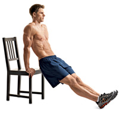

跑步新手的6种最个辅助练习
更新日期:
注意：本文翻译自http://www.runnersworld.com ，文章原名为《The 6 Best Exercises for New Runners》。原文链接为:http://www.runnersworld.com/getting-started/the-6-best-exercises-for-new-runners?page=1
跑步本身当然是跑步新手的最重要的练习方式。同时每天几分钟的辅助练习可以对身体的关键部位进行拉伸和增加，从而有助于降低受伤的风险和提高跑步的乐趣。下面介绍的几种练习方式可以帮助跑步更加的有效和顺畅。
小腿拉伸
目标：提高小腿肌肉和跟腱的柔韧性。
原理：与其它运动相比，跑步会使小腿进行大幅度的摆动。小腿和跟腱更好的柔韧性可以使你跑起来更加的有力并且可以降低这部分肌肉和肌腱拉伤的风险。
方法：坐在地上，两腿向前并拢平放，放松。用手，绳子或者毛巾搂住前脚掌。保持脚踝的上部放松，你可以感觉到小腿肚肌肉和跟腱的拉伸。同时呼气，保持2秒钟。然后使脚恢复原位。每条腿重复做10次。
时间：最好在跑步后。
建议：你应该努力提高小腿和跟腱的柔韧性。如果你是长期穿着高跟鞋的新手，可以尝试在只穿袜子的情况下围绕你的房子走路，这样可以拉伸你的小腿肌肉和跟腱。
腘绳肌腱（大腿后侧）拉伸
目标：提高链接臀部与膝盖大肌群的柔韧性。
原理：好的跑步姿势是使用腿后侧的强大肌群推动你往前。但是由于大腿后侧肌群非常僵硬，许多跑步者过度使用大腿前侧的股四头肌。这种方式会使身体上下动影响跑步的平顺。
方法：向上平躺，一条腿弯曲，脚平放在地上。用绳子或者毛巾绕在另外一只脚的脚掌上，并且保持这条腿伸直。收缩股四头肌提升这条腿使脚朝天。需要注意的是绳子的作用仅仅是规范这个动作而不是拉脚掌。直至感觉到大腿后侧肌群非常舒展的拉伸。然后放下。整个动作持续几秒钟。每条腿作10次。
时间：可以在跑步前做这个动作，尤其如果你早上起来第一件事就是跑步，或者是坐了很长时间以后。一周可以练习多次。也可以在跑后拉伸，由于肌肉很热可以加强拉伸效果。
建议：长时间坐姿工作和开车会毁坏腘绳肌群的柔韧性，如果是这样，最好每个小时都起来走走。
深蹲
目标：提高臀部和臀部肌肉的力量和灵活性。
原理：核心力量不仅仅指的是强壮的腹肌。你真正的核心力量存在于臀部和臀部周围的肌群中。强壮的髋部和臀部肌肉可以支持大范围的流畅动作，对于良好的跑步姿势来说很重要。同时，拥有强壮的髋部可以降低跑步受伤的几率，例如膝盖受伤的几率。这是由于当脚步着地和脚尖离地的时候，双腿可以更好的保持对齐。
方法：两脚分开保持自然站立，同时双手放置在头后。保持背部姿态并放松。身体不要前倾。髋部下蹲，同时保持膝盖在脚上方，上身保持向上。只要你可以保持姿势（上体向上，膝盖与脚对齐）就一直向下蹲。在最低点，使用胯部和髋部的力量把身体提起来。刚开始做两组，每组10次，逐渐增加到每次3组，每组25次。
时间：每周留出2到3天进行力量练习，包括深蹲。在你完成一个轻松的跑步练习后，或者在你有空的时候都可以。如果你不是在跑步后做力量练习，那么就需要在做练习之前做一些拉伸或者走路的练习来热身。
建议：如果你有后腰或者膝盖的问题，那么在深蹲的时候就不要让你的大腿与地面平行。
双腿提腰
目标：拥有一个灵活的后腰，使你在跑步时保持水平。
原理：有调查表明，超过70%的美国成年人在一定时间内为腰疼所困扰。对于跑步者而言，后背不平衡和紧绷会引起骨盆前倾，也会撑拉胯部和腘绳肌，从而引起连锁反应导致从臀部到脚的任何部位的受伤。
方法：平躺，双腿膝盖弯曲，脚平放触地。双手放在膝盖后方，目的是在动作中提供辅助力量。使用腹肌和股四头肌向胸部方向提升双腿，直至极限位置。这个过程可以使用双手做轻微辅助，但是不用用双手去拉双腿。在极限位置停留1.5-2秒，然后恢复到初始位置。每组重复10次。
时间：这个动作会拉伸腘绳肌，所以最好在跑步前做这个动作，当然如果经常在跑后做，你会感觉到非常大的提升。
建议：对于那些长时间坐的人来说，这个动作时必须的。
平板支撑
目标：让你跑的更加“挺拔”
原理：跑步人的一个情形是弓着腰跑，尤其是在累的时候更为常见。这意味着你要更加努力的去克服重力。这种情况引起背部肌肉和大腿肌肉为了使你保持直立从而过度弥补。结果是：你为了保持更好的上体姿态，你会跑的更慢，引起更多的不适。平板支撑增加了你“挺拔”跑和放松姿态的能力。
方法：依照俯卧撑，使用前臂和脚尖作为支撑，身体离地，收紧肚子，保持肩部，背部，屁股，脚后跟在一条直线上。保持30秒（或者开始发抖或者腰部发软），坐在地上简短休息，然后重新做一次，争取达到做两次，每次保持1分钟。
时间：你可以每天都做，每周至少3次才可以看到效果，跑步后做为佳。
建议：这个动作可以激发你的整个腹部区域，比仰卧起坐或者其他腹部练习更加有效。
臂屈伸

目标：提高协调性，使双肩与臀部对齐，而不是向前耸肩。
原理：好的跑步姿势是脚，臀部，上体，和头都在一条直线上。这样做会让你感到肩膀，臂膀和脖子不必要的累，并且限制了你的呼吸，降低了你臀部和腘绳肌运动的平顺性。曲臂伸是一种很简易的方式，可以加强你后背的肌肉使你可以轻松保持跑步姿态。
方法：背对椅子或者其他类似高度的平面，双手支撑平面。双腿伸直，脚后跟着地。身体向下，胳膊肘呈90度弯曲，然后身体向上恢复初始位置，保持身体呈直线。初始为每次两组，每组10个，逐渐增加到每组20个。
时间：可以在你做平板支撑和深蹲的时候做。
建议：如果你总是盯着手机或者某种类型的屏幕，那么一定要抽时间放松和恢复你的肩膀。直立，从前到后转动你的肩部10次，这个动作好像是你的肩膀一上一下。